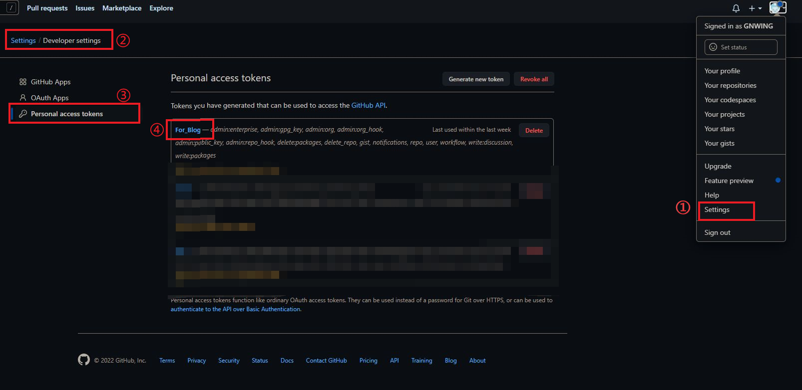
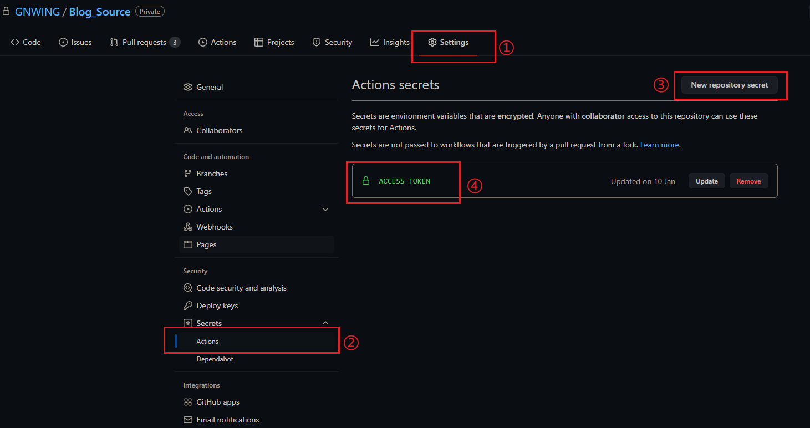
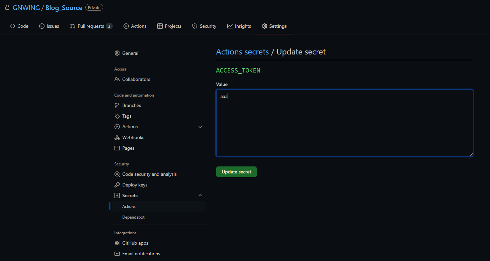
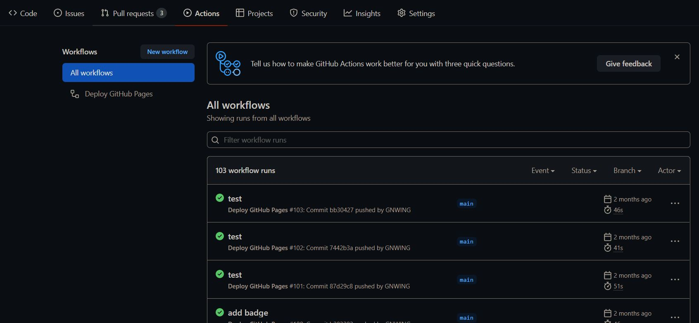
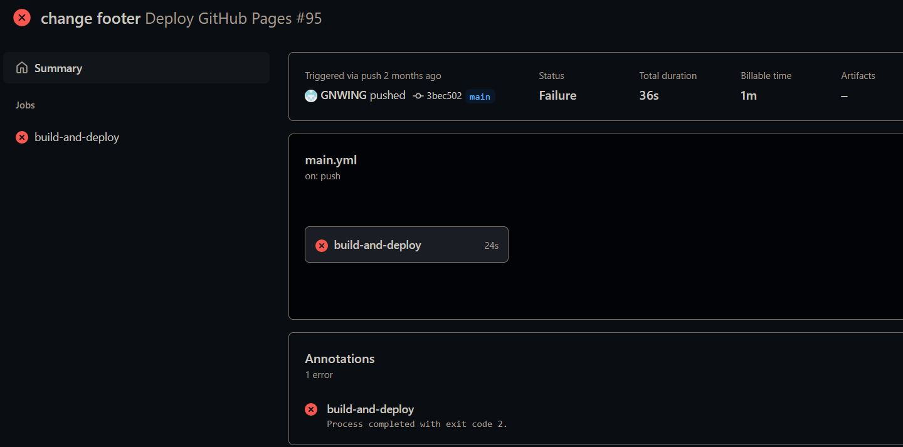

目录：
* 1. [环境准备](#)
* 2. [安装Hexo](#Hexo)
* 2.1. [使用npm安装hexo](#npmhexo)
* 2.2. [初始化博客](#-1)
* 2.3. [本地预览](#-1)
* 3. [创建Github Pages](#GithubPages)
* 3.1. [远程仓库配置](#-1)
* 3.2. [同步本地文件至GitHub](#GitHub)
* 3.3. [添加GitHub Actions](#GitHubActions)
1. 环境准备
查看是否安装成功
——
2. 安装Hexo
2.1. 使用npm安装hexo
在计算机本地新建文件夹，右键打开git bash。
2.2. 初始化博客
在新建的文件夹中打开git bash或Terminal
1
2
3
4
5
| # 初始化
hexo init <folder>
# 进入目录
cd <folder>
npm install
|
此时，<folder>目录下有类似下面的目录结构
1
2
3
4
5
6
7
8
9
10
11
12
13
14
15
| .
├── .GitHub
├── node_modules # Hexo 所需依赖
├── _config.yml # Hexo 全局配置文件
├── package.json # npm软件包及版本信息
├── scaffolds # 模版文件夹
| ├── draft.md # 草稿模板
| ├── page.md # 页面模板
| └── post.md # 文章模板
├── source # 资源文件夹
| ├── _drafts # 草稿文件夹
| └── _posts # 文章文件夹
├── .gitignore # Git 忽略文件信息
├── _config.[主题名].yml # 主题的配置文件
└── themes # 主题文件夹
|
2.3. 本地预览
安装完成后，先在本地预览查看是否安装成功
1
2
3
4
| # 以默认端口启动本地预览，默认地址为http://localhost:4000
hexo s
# 若要指定端口，则使用-p 参数，如8888端口
hexo s -p 8888
|
在浏览器中访问默认地址即可
3. 创建Github Pages
3.1. 远程仓库配置
因为要使用Github actions来进行自动部署，所以需要用到2个仓库。
假设分别设为以下2个仓库：
仓库1：git@github.com:GNWING/Blog_Source ：#该仓库存放源文件，包括编辑的md文章，hexo项目文件，即对应上述的本地初始化的文件夹，建议设置为私有，可以防止配置文件等信息泄露，
仓库2：git@github.com:GNWING/GNWING.github.io ：#存放的是使用源文件生产的静态资源文件，一般对应生成的public文件夹，就是GitHub Pages的页面内容
创建好上面两个仓库后，还需要对仓库进行如下设置：
1、ACCESS_TOKEN:
这个 ACCESS_TOKEN 是访问 GitHub API 的令牌，可以在 GitHub 主页，点击个人头像，Settings -> Developer settings -> Personal access tokens 进行生成或更新，第一次生成后你可以看到这个令牌，然后再也不会显示，因此你需要记下来，假如这个字符串是 aaa，然后打开仓库 1 的设置页面，设置 secrets，加入环境变量， name 是 ACCESS_TOKEN，value 是 aaa。如下图所示：



3.2. 同步本地文件至GitHub
打开安装Hexo时创建的<folder>，并右键打开git bash或Terminal:
1
2
3
4
5
6
7
8
9
10
11
| # 初始化Git仓库
git init
# 关联到远程Git仓库（源码）
git remote add origin https://github.com/GNWING/Blog_Source.git
# 配置对应分支
git branch -M main
# 上传
git push -u origin main
|
3.3. 添加GitHub Actions
在仓库 1 的根目录下，创建 .github/workflows/main.yml 文件，这就是 GitHub Actions 功能的配置文件，用于告诉 GitHub 要做哪些事情，写入以下内容：
1
2
3
4
5
6
7
8
9
10
11
12
13
14
15
16
17
18
19
20
21
22
23
24
25
26
27
28
29
30
31
32
33
34
35
36
37
38
39
40
41
42
43
44
45
46
47
48
49
50
51
52
53
| name: Deploy GitHub Pages
# 触发条件：在 push 到 master 分支后
on:
push:
branches:
- main
# 任务
jobs:
build-and-deploy:
# 服务器环境：最新版 Ubuntu
runs-on: ubuntu-latest
steps:
# 拉取代码
- name: Checkout
uses: actions/checkout@v2
with:
persist-credentials: false
# 设置Hexo所需的Node.js版本，高版本Node.js在执行时会报错
- name: Use Node.js 12.x
uses: actions/setup-node@v1
with:
node-version: '12.x'
# 在服务器安装Hexo，用于后续生成静态文件
- name: install hexo-cli
run: npm install -g hexo-cli
- name: Cache NPM dependencies
uses: actions/cache@v2
with:
path: node_modules
key: ${{ runner.OS }}-npm-cache
restore-keys: |
${{ runner.OS }}-npm-cache
# 安装相关依赖
- name: Install Dependencies
run: npm install
- name: clean
run: hexo clean
- name: Build
run: npm run build
# 2、部署到 GitHub Pages
- name: Deploy
uses: JamesIves/github-pages-deploy-action@releases/v3
with:
ACCESS_TOKEN: ${{ secrets.ACCESS_TOKEN }}
REPOSITORY_NAME: GNWING/gnwing.github.io
BRANCH: master
FOLDER: public
#注意这里的 public 是仓库根目录下的 public，也就是 npm run build 生成静态资源的路径，比如有的人是 `docs/.vuepress/dist`
|
3.4 推送仓库，测试Actions
打开git bash或Terminal:
1
2
3
| git add .
git commit "Add Github Actions"
git push
|
推送后，在Gihub仓库Actions页面查看运行情况，若出现错误，可查看详细日志信息

